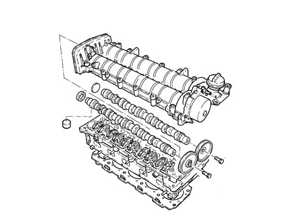

1036L camshaft (2) in top head (1)
- Path
- Descriptions > 10 ENGINE > 1036 TIMING SYSTEM > 1036L camshaft (2) in top head (1)
- Kind
- system description
- Applies to
- engines: 2.4 JTD 20v; all production periods
- Interactive page
- https://sloeber94.github.io/elrnDB-a156/en/#/3232886
Applies to: engines: 2.4 JTD 20v; all production periods
COMPONENT DESCRIPTION
CAMSHAFT
Specifcations
Type
The exhaust camshaft is driven directly by the toothed belt and transmits power to the inlet camshaft through a a pair of straight toothed gears.
The exhaust camshaft also drives the vacuum unit that is fitted on the gears side.
